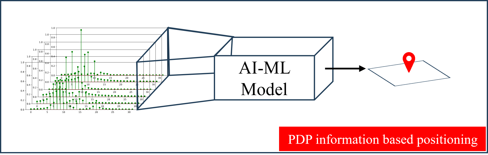
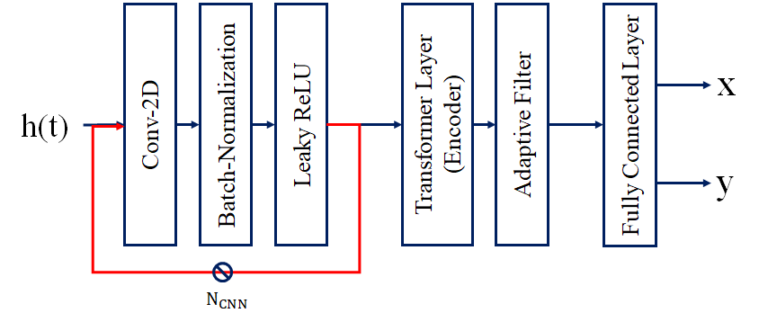
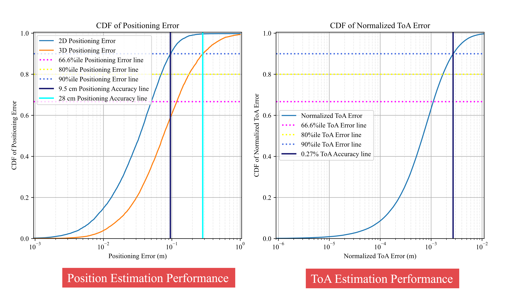
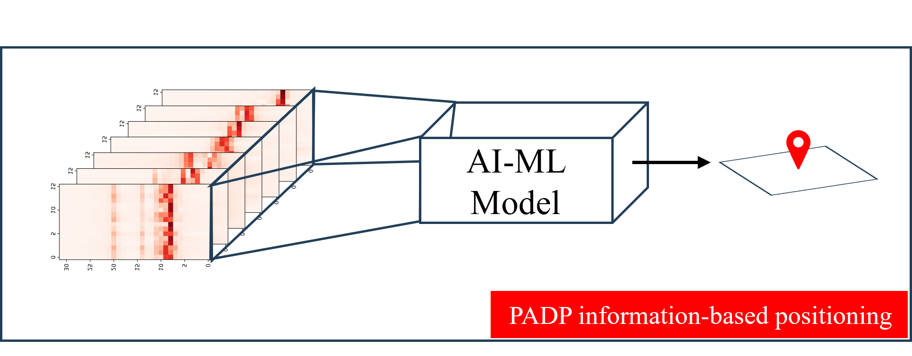
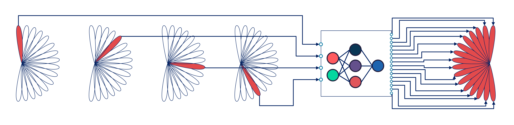
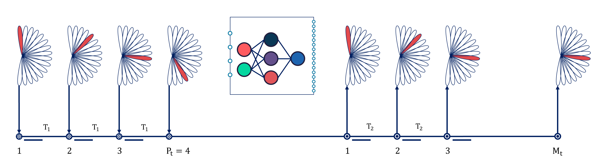
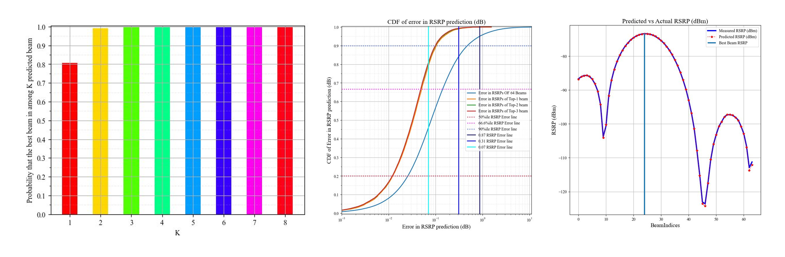
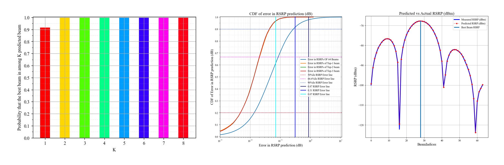
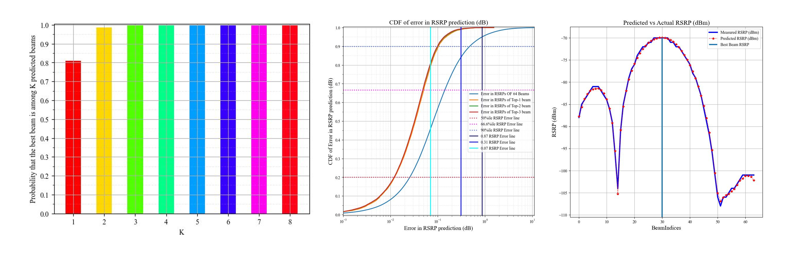

Academic Collaboration
The SLS team manages research colaboration with academic institutes. Currently, we are working with Prof. Preetam Kumar from Indian Institute of Technology, Patna. We work with the following researchers from his team.
Caution
Aditya and Priya may not be available from the end of May onward, which could lead to a discontinuity in the positioning work. The professor has assured us that new individuals will be found to take their places by August. However, if both decide not to continue their current work, progress might be hindered for 2-3 months.
AI-ML for Time measurements based Positioning
We work with Aditya Gupta on AI-ML for Positioning Enhancements (research and system simulations for Release-19 of 3GPP). We worked to design and identification of the AI-ML models for the following problems:
{kind=link}

The details of the problem statement can be found here: (Page isn’t created yet)
Problem Statement-1 (PS-1): Unquantized and raw CIR/PDP based Direct AI-ML Positioning. (Completed on Jan 18, 2025)
Problem Statement-2 (PS-2): Unquantized and raw CIR/PDP based AI-ML Assisted Positioning (Almost Completed on Feb 14, 2025)
Estimate the time of arrival (ToA) measurement.
Problem Statement-3 (PS-3): Unquantized and truncated CIR/PDP based Direct AI-ML Positioning (Started on Feb 17, 2025):
For truncation defined by Nt = 128 | Nt’ = 24
For truncation defined by Nt = 128 | Nt’ = 16
For truncation defined by Nt = 128 | Nt’ = 12
For truncation defined by Nt = 128 | Nt’ = 8
For truncation defined by Nt = 64 | Nt’ = 24
For truncation defined by Nt = 64 | Nt’ = 16
For truncation defined by Nt = 64 | Nt’ = 8
For truncation defined by Nt = 64 | Nt’ = 4
For truncation defined by Nt = 32 | Nt’ = 16
For truncation defined by Nt = 32 | Nt’ = 12
For truncation defined by Nt = 32 | Nt’ = 8
For truncation defined by Nt = 32 | Nt’ = 4
Problem Statement-4 (PS-4): Unquantized and truncated CIR/PDP based Direct AI-ML Assisted Positioning (To be started):
For truncation defined by Nt = 128 | Nt’ = 24
For truncation defined by Nt = 128 | Nt’ = 16
For truncation defined by Nt = 128 | Nt’ = 12
For truncation defined by Nt = 128 | Nt’ = 8
For truncation defined by Nt = 64 | Nt’ = 24
For truncation defined by Nt = 64 | Nt’ = 16
For truncation defined by Nt = 64 | Nt’ = 8
For truncation defined by Nt = 64 | Nt’ = 4
For truncation defined by Nt = 32 | Nt’ = 16
For truncation defined by Nt = 32 | Nt’ = 12
For truncation defined by Nt = 32 | Nt’ = 8
For truncation defined by Nt = 32 | Nt’ = 4
Project Directory-I
All the files related to this work are stored on: Link-T Positioning
Script for Performance Evaluation of the Model:
PS-3: Not started yet,
PS-4: Not started yet.
Project Deliverables so far-I
The deliverable are the final model architecture, as shown below, which meets the KPIs targets as detailed below:
{kind=link}

Final Model Architecture fo PS-1 (Pytorch Model-1).
Performance achieved: ~12 cm (2D positioning accuracy).
Final Model Architecture fo PS-2 (Pytorch Model-2).
Performance achieved: ~8 cm (2D positioning accuracy) | 28 cm (3D positioning accuracy)
{kind=link}

Final Model Architecture fo PS-3: No progress yet.
Final Model Architecture fo PS-4: No progress yet.
Challenges Records-I
Requires a GPU with dedicated memory of approximately 16 GB.
The spatio-temporal pattern in the channel generated using the SoS model is very weak. Therefore, a spatial filtering-based method is used, which provides a strong pattern but results in slightly inconsistent parameter statistics.
AI-ML for Angle-Time measurements based Positioning
We work with Priya Roushni on AI-ML for Positioning Enhancements, focusing on research and system simulations for 3GPP Release-20. Our work involves designing and identifying AI-ML models for various problems, including:
The details of the problem statement can be found here: (Page isn’t created yet)
{kind=link}

Unquantized and raw Angle-Time information based Direct AI-ML Positioning.
Unquantized and raw Angle-Time information based Direct AI-ML Assisted Positioning:
Estimate the time of arrival (ToA) and angle of arrival (AoA) measurement.
Project Directory-II
All the files related to this work are stored on: Link-AT Positioning
Project Deliverables so far-II
No progress yet.
Challenges Records-II
A GPU with dedicated memory of approximately 64 GB is required.
Due to the large input size (100,000 x 18 x 23 x 256), a significantly large model required to effectively learn the patterns to achieve the desired accuracy.
This results in the requirement of a large dataset and an extensive model that requires more time to converge.
Longer iteration cycles for model evaluation lead to increased turnaround time (TaT).
AI-ML for Beam-management: R19
We work with Aruj Gautam, Divyansh Gupta, and Adarsh Ravi on AI-ML for Beam Management, focusing on research and system simulations for 3GPP Release-19. Our work involves designing and identifying AI-ML models for the following problems:
The details of the problem statement can be found here: ?
Important
Standards Team (Jishnu A.) wishes to extend this work to AI-ML for Mobility Management for release-20 which aims to solve the following problem:
L1-RSRP and L3-RSRP prediction for triggering events and RLF prediction
Proactive Load-balancing
AI-ML for Spatial Beam Prediction:
PS-1: Static user scenario with unquantified RSRPs.
PS-2: Static user scenario with quantized RSRPs.
PS-3: Mobile user scenario (3 Km/h) with quantized RSRPs.
{kind=link}

- AI-ML for Spatio Temporal Beam Prediction:
PS-4: Mobile user scenario (30 Km/h) with quantized RSRPs.
{kind=link}

Project Directory-III
All the files related to this work are stored on: Link
Dataset used for Positioning (Training-BM | Test-BM),
Project Deliverables so far-III
- PS-1 is solved and meets the target KPIs:
Inaccuracy in RSRP for 90%ile UEs:
Top-1/K Beam accuracy:
Top-3/K Beam Accuracy:
Top-K/3 Beam Accuracy:
{kind=link}

{kind=link}

- PS-2 is almost solved and meets the target KPIs:
Inaccuracy in RSRP for 90%ile UEs:
Top-1/K Beam accuracy:
Top-3/K Beam Accuracy:
Top-K/3 Beam Accuracy:
{kind=link}

- PS-3 is not started yet.
Inaccuracy in RSRP for 90%ile UEs: NA
Top-1/K Beam accuracy: NA
Top-3/K Beam Accuracy: NA
Top-K/3 Beam Accuracy: NA
- PS-4 is not started yet.
Inaccuracy in RSRP for 90%ile UEs: NA
Top-1/K Beam accuracy: NA
Top-3/K Beam Accuracy: NA
Top-K/3 Beam Accuracy: NA
Challenges and Observation Records-III
Size the the input is very small resulting in very little information and small feature size for model to learn and interpolate from. Hence, a lot of domain knowledge is required to solve this problem.
The model identified is decently small, hence computation is not a big challenge, but, innovation is.
Across the time the rate at which the RSRPs change is abrupt (changes at the rate of UE mobility), making it difficult for the model to learn the pattern.
Minutes of the meeting
Meeting |
Date |
Minutes of the Meeting |
|---|---|---|
Initiation |
– |
|
Meeting-1 |
14-Nov-2024 |
|
Meeting-2 |
21-Nov-2024 |
|
Meeting-3 |
28-Nov-2024 |
|
Meeting-4 |
05-Dec-2024 |
|
Meeting-5 |
12-Dec-2024 |
|
Meeting-6 |
19-Dec-2024 |
|
Meeting-7 |
26-Dec-2024 |
|
Meeting-8 |
02-Jan-2024 |
|
Meeting-9 |
09-Jan-2024 |
|
Meeting-10 |
16-Jan-2024 |
|
Meeting-11 |
23-Jan-2024 |
|
Meeting-12 |
30-Jan-2024 |
|
Meeting-13 |
07-Feb-2024 |
|
Meeting-14 |
14-Feb-2024 |
|
Meeting-15 |
21-Feb-2024 |
|
Meeting-16 |
28-Feb-2024 |
|
Meeting-17 |
07-Mar-2024 |
|
Meeting-18 |
14-Mar-2024 |
Yet to happen |
Meeting-19 |
21-Mar-2024 |
Yet to happen |
Meeting-20 |
28-Mar-2024 |
Yet to happen |